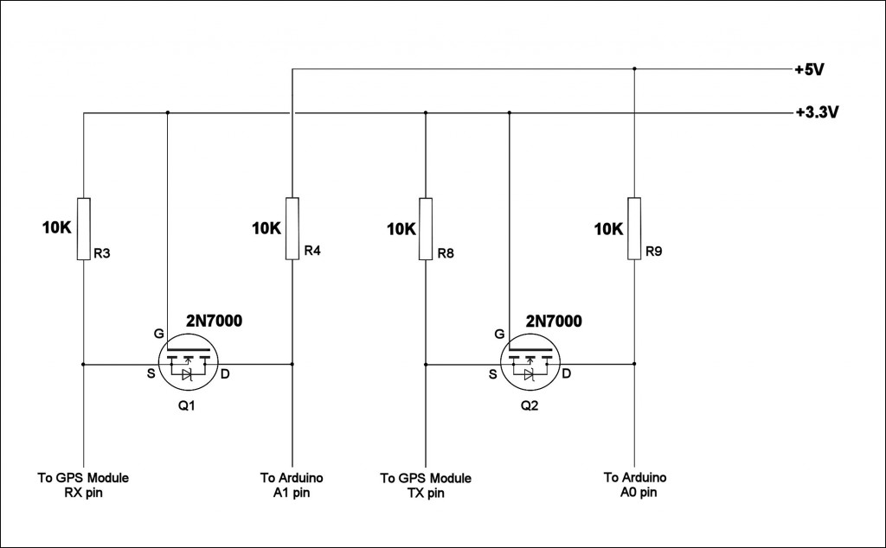

In Part 3 of this project we will add a keypad for direct frequency entry and program the GPS module on the fly directly from the Arduino Nano. We will also add a battery check feature and make some changes to the original circuit. A new PCB design will allow all components to be on one board.
You can download the new PCB artwork, schematic and software from the links below:
http://www.scullcom.com/GPS_Locked_Freq_Keypad_PCB.pdf
http://www.scullcom.com/GPS_Locked_Freq_Keypad_Schematic.pdf
Below is the link for the Arduino Code this is a zip file which when unzipped contains 3 files to the program.
http://www.scullcom.com/GPS_10MHz_Ref_Keypad_v4.zip
The files will unzip in to a folder named “GPS_10Mhz_Ref_Keypad_v4” which will contain 3 files, if you then open the main program file “GPS_10Mhz_Ref_Keypad_v4” in the Arduino IDE the other two files will automatically load, these include the “ublox.cpp and ublox.h” files.
If you do not have the keypad library already installed in your Arduino IDE then you can download it from:
http://playground.arduino.cc/uploads/Code/Keypad.zip
PLEASE NOTE TO COMPILE THIS CODE YOU NEED TO BE RUNNING THE LATEST VERSION OF ARDUINO IDE (version 1.6.7)
In this project we will use the Neo-7M. As this uses a ROM, the option to use a 3 volt backup battery on the PCB will help to speed up satellite lock after switch-on (this is optional). If the back-up battery is not used it may take a few minutes before the unit locks on to satellites. If the Neo-7N version is used then as it uses a FLASH memory there is no need for a back-up supply.
List of other u-blox versions suitable below:
u-blox Receiver Type Type of Memory fitted Type of Oscillator used
Neo-6T ROM TCXO
Neo-7M ROM Crystal
Neo-7N FLASH TCXO
Neo-7P FLASH Crystal
Neo-M8M ROM Crystal
Neo-M8N FLASH TCXO
Neo-M8Q ROM Crystal
Operation of the level converter/shifter circuit used

The u-blox Neo-7 GPS module operates at 3.3 volts and therefore care should be taken when connecting GPS serial TX and RX pins directly to the Arduino which is operating at 5 volt. Although in practice if only the GPS TX serial pin is used it seems to work fine as the Arduino appears to be able to handle lower logic level inputs from the GPS module. However, if the GPS RX pin is also connected to the Arduino this may cause damage to the GPS u-blox Neo-7 as the Arduino will drive it with 5 volt logic levels. Therefore, it is technically correct to use a logic level converter circuit to shift the 5 volt logic levels to 3 volt logic levels.
The above circuit which uses two ‘N’ channel MOSFETS provides a simple method of converting/shifter these logic levels and we use this technique in our project.
The logic level converter idea has been around for some time. During the late 1990’s Philips R & D Engineers in The Netherlands, had some issues with logic level problems with their I²C Bus technology and there engineers came up with this idea of using a ‘N’ Channel MOSFET to shift the logic high levels. At the time developments in IC technology was improving which resulted in the clearances on the silicon chip substrate reducing to less than 0.5μm which limited the logic high level and supply voltages to around 3.3 volt.
This bi-directional level converter/shifter is used to connect the serial TX and RX pins of the GPS module to the Arduino, each with a different supply voltage and different logic levels. The above circuit has two logic level shifters, both identical. So we will consider the left hand side of the diagram. The source of the MOSFET, which is connected to the GPS module, has pull-up resistors connected to a 3.3 Volt supply, whilst the drain of the MOSFET, which is connected to the Arduino, has pull-up resistors connected to a 5 Volt supply.
The following three states should be considered during the operation of this level converter/shifter:
1. Neither the GPS module nor the Arduino is pulling the logic level LOW. The source of the MOSFET and therefore the GPS serial line is pulled up by its 10K pull-up resistors to 3.3 V. The gate and the source of the MOSFET is at 3.3 V, so its VGS is below the threshold voltage and the MOSFET is therefore not conducting. This allows the level at Arduino pin to be pulled up by the MOSFET drain pull-up resistor to 5 V logic level. So the lines of both sections are HIGH, but at a different voltage level.
2. The GPS module 3.3 V logic level is pulled down to a LOW level. The source of the MOSFET also becomes LOW, while the gate stays at 3.3 V. VGS rises above the threshold and the MOSFET starts to conduct. The drain of the MOSFET is now pulled down to a LOW level by the action of the GPS module. So now both the GPS module and the Arduino go LOW to the same voltage level.
3. The Arduino 5 V logic level at the drain of the MOSFET is pulled down to a LOW level by the Arduino. Now the drain-substrate diode of the MOSFET conducts and pulls the source of the MOSFET down until VGS passes the threshold and the MOSFET starts to conduct. The source of the MOSFET is then further pulled down to a LOW level by this action of the Arduino taking the 5 V logic level LOW. So both the Arduino and the GPS module go LOW to the same voltage level.
The three states explain above show that the logic levels are transferred in both directions, independent of which device is driving the logic level.
Hi sir,
Thanks for your thorough lessons and designs!
I find it very informational to see this project’s evolution.
One question: do you consider producing the PCB for this project (the single PCB with all components on it)?
Thanks,
Ton
Thanks Ton for your comments and sorry for the delay in reply. At the moment I do not have the time to produce PCB and parts as a kit. Not sure if the take up would cover all the costs.
Regards,
Louis
Thanks for your efforts–do you have a parts list for the build-I am overlooking it if it is here
thanks Stan